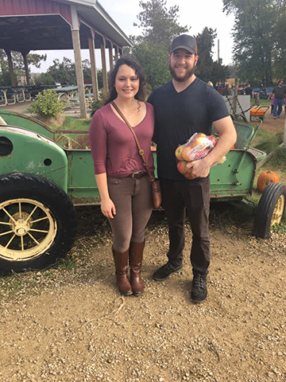

Wine, boys and The Notebook
This is a photo of me and my Ex. He had this idea to go to the apple orchard, so I went with. At the time, I thought that this was a super cute idea. Now, I realize how LAME of an idea it was. We went through the apple trees and picked the best apples. He even climbed a tree to get the perfect apple at the top that I really wanted. GOSH, what a loser. Yeah, I really did like him then. We had this whole plan to get a dog and move out west to a mountain town. We would always talk about how nice it would be to finish work, meet up for coffee and then go for a hike in the foothills before the sunset. But, I am so happy that none of that is happening. Honestly, living the single life with is the best. I love that next year I will be able to go apple picking alone, and that I will get to move to a new place where I know no one alone. It'll be the best of times. *not crying right now, not even thinking about him*
OMG! THIS IS MUH GUUUUUUUURRRLL. when this photo was taken we were at a work party for all of the women that work with us. It was the best of times. You know, it was so easy without the boys there to distract us with their childish talk about other girls. It gets so dramatic when the boys are there. I would just rather be with my girl. We are such a great pair. We dance to ALL of the best songs, and even some of the worst ones because we are just that fun. Everyone wants to dance in our circle, but there are only a few that can keep up with us. In addition to dancing like no one is watching and being free spirits in general, we do love our wine! The light fruity taste is all that we need to keep a dance party going until the AM! After a night out, I can always count on this lady for a cry sesh while watching our favorite rom. coms. Who needs a guy when you have such great gals around? Not me. Not even a little bit. And I am NOT trying to impress any of the guys that I see, because I am so independent.